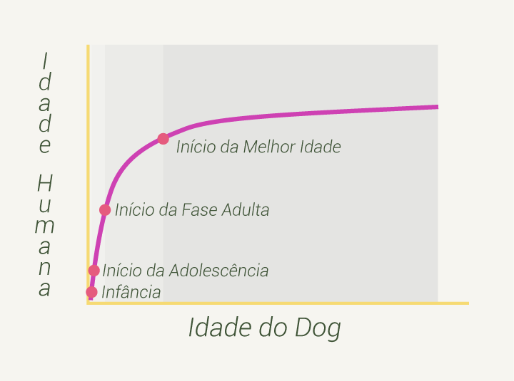

NÃO É SÓ MULTIPLICAR POR 7?
Não! A conta de multiplicar a idade do seu Dog por 7 para obter a idade dele em anos humanos é muito difundida, mas está errada.
Cachorros envelhecem em um ritmo diferente dos seres-humanos.
Quando mais jovens, envelhecem mais rápido, e mais velhos envelhecem mais devagar.
Veja esse exemplo para visualizar melhor:
você sabia que em média, com 9 meses de idade uma Doguinha já pode ter filhos?
Multiplicando 9 por 7, usando a conta tradicional, temos o total de 63 meses, em torno de 5 anos.
E com 5 anos uma ser humano ainda está longe de poder ter filhos.
Por isso, precisamos utilizar uma escala logarítmica em vez de uma escala linear para fazer o cálculo da idade dos Dogs em anos humanos.
Esses dois gráficos mostram a diferença dos dois tipos de conta:
Sendo assim, podemos dividir as fases da vida dos nossos Dogs utilizando o mesmo gráfico:
Um pouco mais sobre o estudo.
Para entender melhor o estudo, é preciso saber como os cientistas utilizaram a Metilação do ADN, uma modificação química ocorrida em nossos genes, para chegarem aos resultados.
Acompanhando essas modificações a cada fase da vida do ser humano (infância, adolescência, adulta e melhor idade) e, comparando com as mesmas modificações ocorridas nas fases da vida dos Dogs, os pesquisadores puderam ter uma melhor noção de quanto tempo nossos bichinhos precisam para navegar por elas.
Por exemplo: se em nosso gene ocorre a modificação X quando entramos na puberdade, foi procurada a mesma modificação X nos genes dos Dogs para descobrir com quanto tempo de vida eles também entram na puberdade.
Isso também foi feito nas outras fases da vida.
E através dessa comparação os pesquisadores conseguiram criar uma fórmula para transformar a idade dos bichanos em idade humana. Que ao ser colocada em um gráfico, se torna uma função logarítmica, e não linear como a conta de multiplicar por 7.
Para saber mais, leia o estudo de onde utilizamos as fórmulas para a criação desse site clicando aqui.